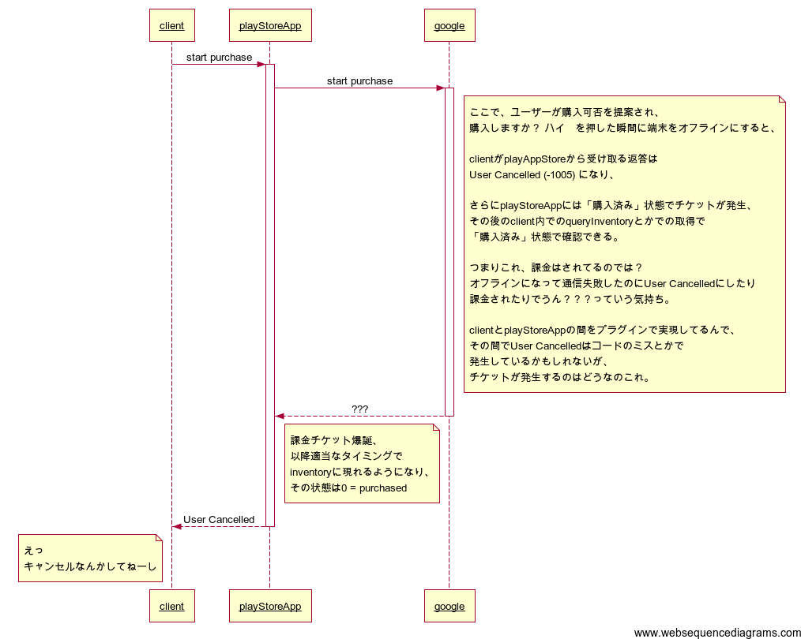

通信障害とGoogle Play Store App
概要
Androidで通信状況がアレなときに、
Platformの用意したサーバと連絡がとれないくせに購入できたことにするGoogleさんのPlayStoreAppの仕様最高にロックだぞみたいな事案にあたった。
きっと悪い夢だ。俺の使ってるプラグインとかコードのバグに違いない。
内容
以下のような手順で発生する。

・StoreAppの通信失敗が原因での失敗なのにUser Cancelled扱いにする
・そのくせ課金は済んでるのでどっかのタイミングでinventoryに購入済み状態でレシートが現れる
みたいなの闇で楽しい。
UnityでAndroidのやつ作ってて見つけた挙動なので、Prime31とかのプラグインがUser Cancelled を返してるのかも知れないので、
追う。